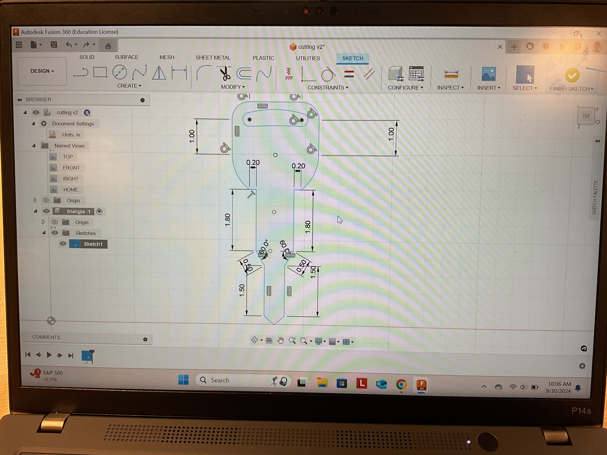

3D Pringing
I wanted to create a fidget toy that can only be 3D printed using Tinker Cad.

I fist made 9 circles of differnt sizes and made every other circle hollow so that I am able to group them todether to make the circles hollow.

After I started to combine them using the group feature and allign feature.

I I finished combineing each hollow circle with the solid circles.

I then started to combine all of the circles together so that it alternates.

After I created to rectangles to place on the top and bottom of the circle to cut out those parts so that the fidget toy can move internally.
I alligned the rectangles together

It came out to the dimensions that I wanted and sent it to print
This is the final product and it came out like I wanted.


3D Scanning
Jose told us that Jorge really enjoys playing with toy keys, so I decided to laser cut him toy keys. I started by making a basic outline of the top part of the key in Fusion 360.

After I traced out the part where the ring would go through.

I then finished the entire key and made it an accurate length.
Next, I created the ring for the key to fit through and made it smaller than the length of the hole on the key.

I then copied the previous key.

I made some minor changes to the new key. First I changed the width of the top part of the key. Then I changed the lenght and width of the bottom part of the key.

IFinally finished with the desing, I exported it onto Infinity Designer 2.

On Affinity Designer 2 I changed the stroke size of the keys as well as exporting it to the laser cuter.

Finally, I laser cut the design and everything fit perfectly with each other.